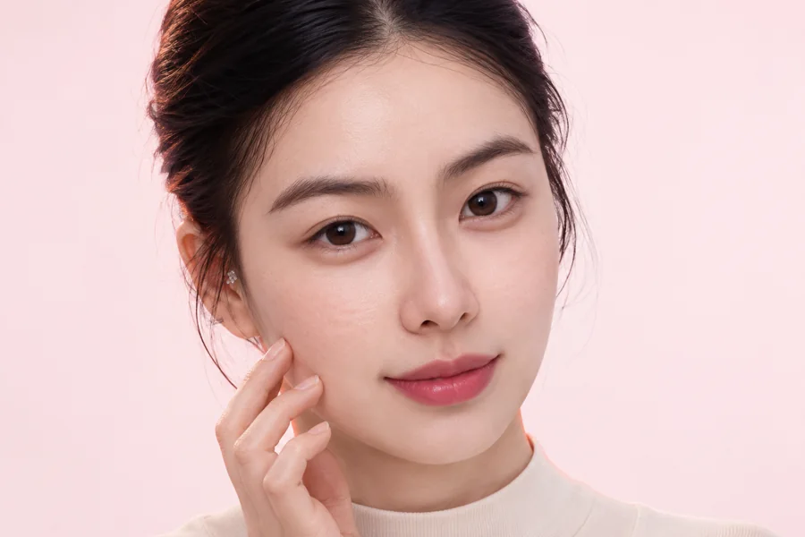
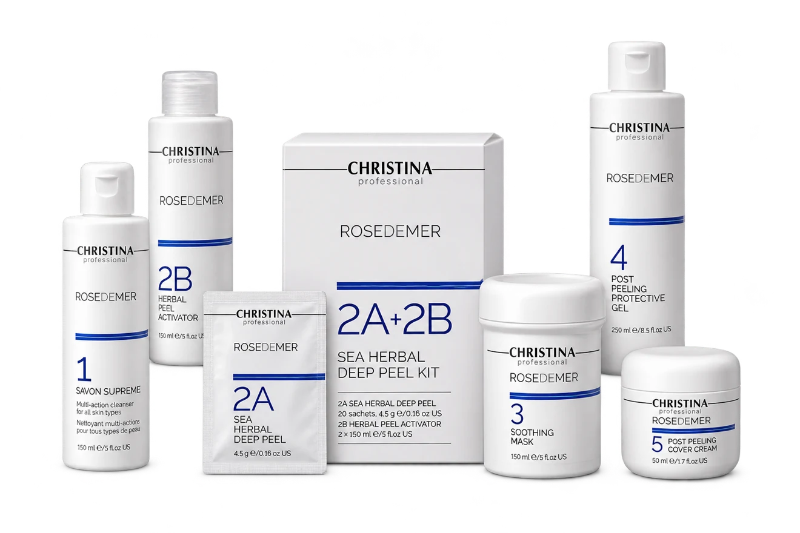
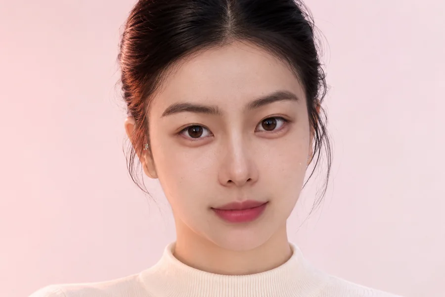
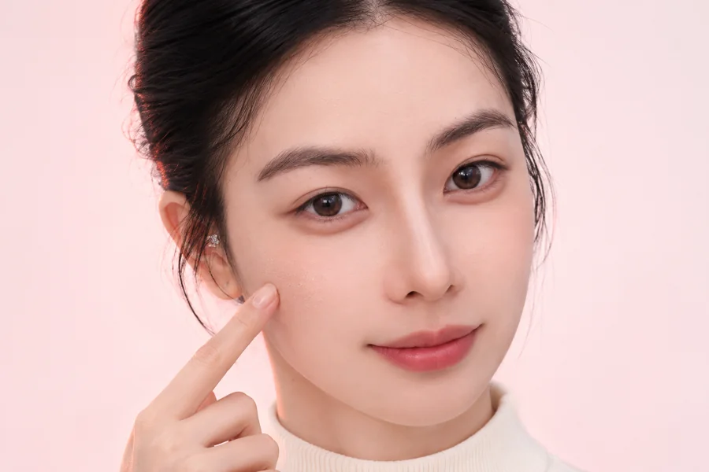
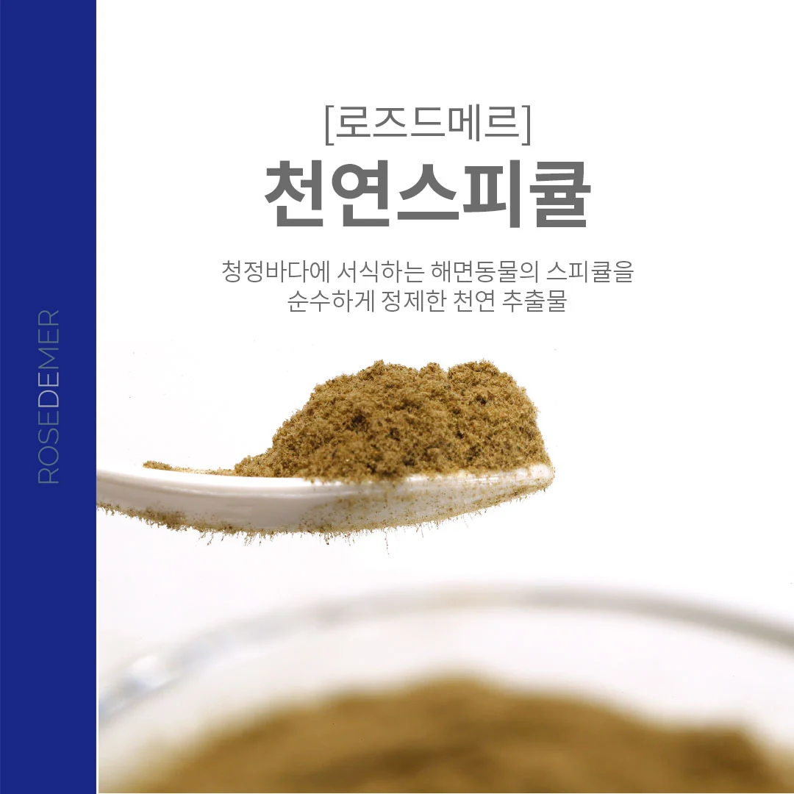
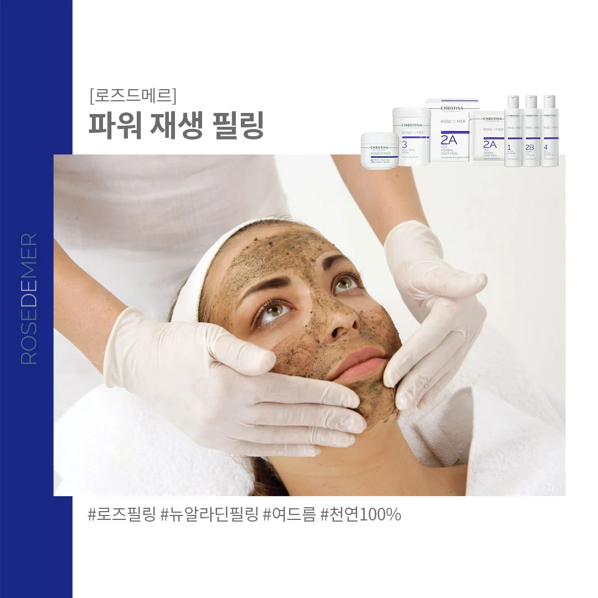
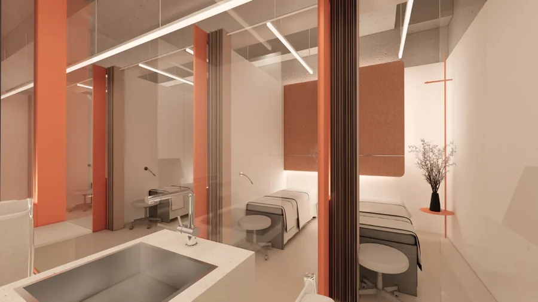
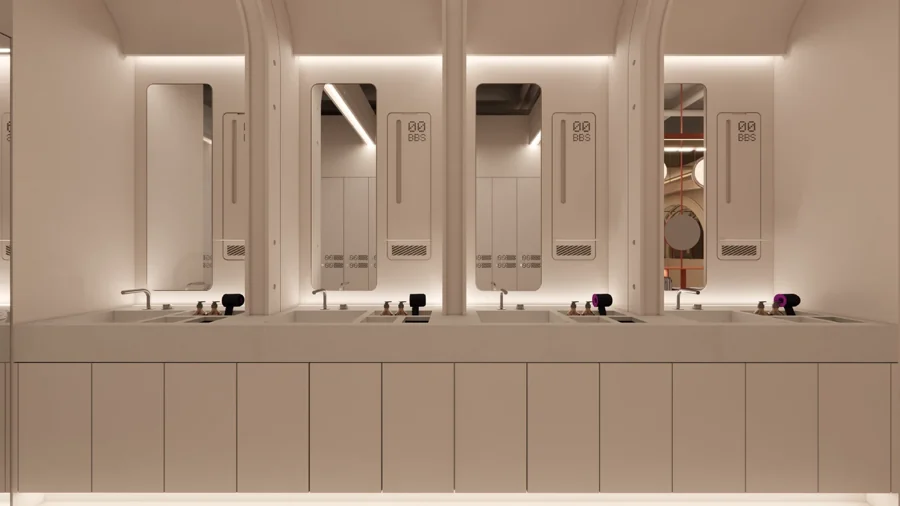
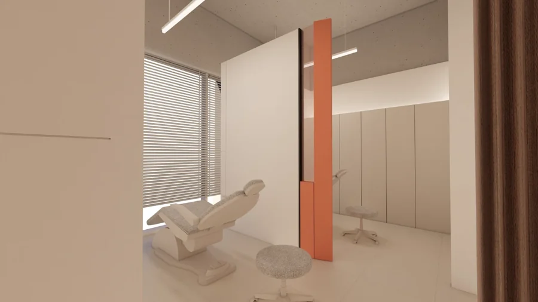

거칠게 느껴지는 피부결
손끝에 느껴지는 거친 결과
고르지 않은 피부 표면이 고민일 때.
CHRISTINAROSE DE MER
SCROLL TO DISCOVERABOUT ROSE DE MER
뷰티블라썸의 알라딘필(로즈필)은 크리스티나의 로즈드메르(Rose de Mer) 제품을 사용하는 필링 관리입니다. 뉴알라딘필링이라는 이름으로도 소개됩니다.
해양 유래 필링 성분을 활용해 피부 표면의 각질을 정리하고 피부결을 관리합니다. 필링의 강도와 적용 여부는 현재 피부 상태를 살핀 뒤 결정합니다.

YOUR SKIN, YOUR PACE
무조건 강한 필링보다,
지금 내 피부에 필요한 관리가 먼저입니다.

손끝에 느껴지는 거친 결과
고르지 않은 피부 표면이 고민일 때.

묵은 각질로 피부가 답답하고
윤기 없이 느껴질 때.

화장이 들뜨고 각질이 보여
피부 상태에 맞는 관리가 필요할 때.
붉음이나 따가움이 있다면 필링보다 피부 상태 확인이 우선입니다.
FACE & BODY CARE
뉴알라딘필(로즈필)은 얼굴뿐 아니라 등, 가슴, 팔, 엉덩이 등 바디 부위의 피부 고민 관리에도 활용되는 필링 시술입니다.
등 부위의 각질과 피지, 트러블 관리
가슴 부위의 거친 피부결 및 트러블 관리
여드름 자국 등으로 얼룩덜룩해진 피부톤 개선 목적
두꺼워진 각질과 거친 피부결 관리
모공각화증 등으로 오돌토돌해진 피부결 관리 목적
적용 부위와 강도는 피부 상태를 확인한 뒤 결정합니다. 염증이나 상처가 있다면 먼저 의료진과 상담해 주세요.
HOW IT WORKS

FROM THE SEA해양 유래 필링 성분
해양 유래 미세 입자를 활용하는 필링입니다. 피부의 민감도와 각질 상태를 살펴 적용합니다.
필링 후 피부 표면의 결을 관리합니다. 체감되는 변화와 각질이 일어나는 정도에는 개인차가 있습니다.
필링만큼 중요한 것은 이후의 관리입니다. 자극을 줄이고 안내받은 보습·차단 방법을 지켜 주세요.
THE TREATMENT
제품을 바르는 순간부터 관리가 끝난 뒤까지,
피부 상태에 맞춰 차근차근 진행합니다.

민감도, 최근 시술·각질 관리와 사용 중인 제품을 확인합니다.
피부를 정돈한 뒤 상태에 맞는 범위와 강도로 적용합니다.
관리 후 피부 반응을 살피며 진정과 보습 관리로 마무리합니다.
일상에서 지킬 관리 방법과 경과에 따른 주의사항을 안내합니다.
AFTER THE PEEL
각질이 보이더라도 서두르지 마세요.
피부의 반응을 살피며 안내에 맞춰 관리해 주세요.
일어나는 각질은 억지로 떼지 마세요. 스크럽이나 추가 각질 제거는 의료진과 상의해 주세요.
피부 상태에 맞는 보습제를 사용하고, 따갑거나 자극적인 제품은 사용 전 확인해 주세요.
외출 시 자외선 차단에 신경 써 주세요. 세안·메이크업 재개 시점은 개별 안내를 따라 주세요.
붉음·따가움·건조감·각질 탈락 등이 생길 수 있습니다. 통증이나 붉음이 심해지거나 오래 지속되면 병원에 연락해 주세요.
뷰티블라썸의 알라딘필(로즈필)은 크리스티나 로즈드메르 제품을 사용하는 관리를 말합니다. 뉴알라딘필링·로즈필링이라는 이름으로도 소개됩니다. 상담 시 사용하는 제품과 관리 과정을 함께 안내해 드립니다.
거친 피부결, 묵은 각질과 칙칙해 보이는 피부가 고민일 때 상담할 수 있습니다. 여드름이나 염증이 있는 경우에는 먼저 피부 상태를 확인하고 적합한 관리 방법을 결정합니다.
민감도와 피부 장벽 상태에 따라 적용 여부가 달라집니다. 붉음, 상처, 햇볕에 탄 피부가 있거나 최근 시술을 받았다면 미리 알려 주세요. 복용약과 사용 중인 화장품도 상담 시 확인합니다.
따끔함이나 열감, 붉음이 나타날 수 있으며 정도는 피부 상태와 적용 강도에 따라 다릅니다. 불편함이 있다면 참지 말고 바로 알려 주세요.
각질이 일어나는 시점과 정도, 회복 속도는 개인마다 다릅니다. 눈에 보이는 각질의 양만으로 결과를 판단하지 않으며, 억지로 벗기거나 문지르지 않는 것이 중요합니다.
붉음이나 각질이 보이는 기간이 생길 수 있으므로 중요한 일정이 있다면 상담 시 알려 주세요. 세안과 메이크업 시점은 실제 피부 반응과 의료진 안내에 따라 조정합니다.
모든 피부에 동일한 간격이나 횟수를 적용하지 않습니다. 이전 관리의 경과와 피부 회복 상태를 확인한 뒤 결정하며, 다른 필링이나 에너지 시술과의 병행도 의료진과 상의해 주세요.
충분한 보습과 자외선 차단, 불필요한 마찰을 줄이는 것이 중요합니다. 안내받지 않은 각질 제거 제품의 추가 사용은 피하고, 심하거나 지속되는 불편함이 있으면 병원에 문의해 주세요.
등, 가슴, 팔, 엉덩이 등 바디 부위에도 활용할 수 있습니다. 등·가슴 트러블, 여드름 자국으로 얼룩덜룩한 피부톤, 두꺼워진 각질과 거친 피부결, 모공각화증 등 오돌토돌한 피부결이 고민일 때 상담할 수 있습니다. 부위별 피부 상태와 염증·상처 여부를 확인한 뒤 적용 여부와 강도를 결정합니다.
나에게 맞는 이벤트를 펼쳐보세요.
Beauty, with care.
피부 상태와 원하는 변화를 세심하게 살피고,
정품·정량과 충분한 설명을 진료의 기본으로 생각합니다.

피부 상태와 일상, 원하는 변화를
함께 살펴 나에게 맞는 진료 계획을 세웁니다.

정품 사용과 정량 원칙을
진료의 기본으로 생각합니다.

개개인의 자연스러운 아름다움을 존중하며,
시술 과정과 관리 방법을 충분히 설명합니다.
Find us.
평일 10:00–20:00
주말·대체공휴일 10:00–16:30
점심시간 없이 진료 · 공휴일 진료는 문의
평일 10:00–20:00
주말·대체공휴일 10:00–16:30
점심시간 없이 진료 · 공휴일 진료는 문의